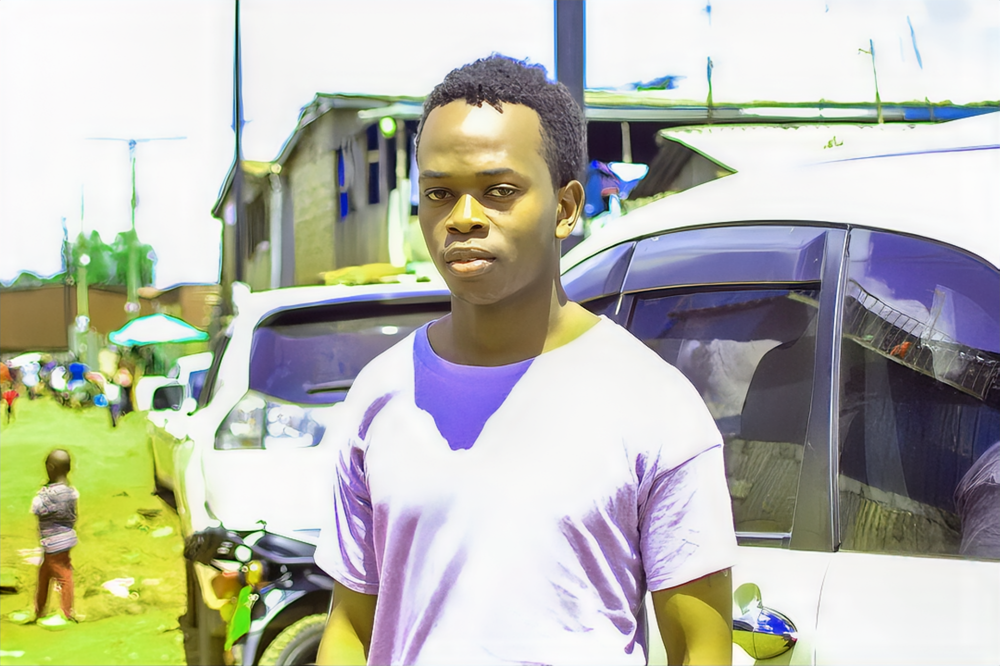

WELCOME TO VANNISTEL LUSIMBI'S PORTFOLIO
I am a GIS and Remote Sensing student passionate about spatial analysis, mapping, and using geospatial technology to solve real-world problems. Explore my academic journey, projects, and innovations through this site.